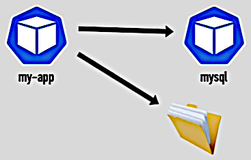

[BACK]
K8s Volumes
K8s Volumes
2:38:08

K8s has no persistence out of the box. So we need to make extra adjustments in order to keep the
data between the Pods restarts. This may be required for databases and shared directories.
We will discuss three components:
- Persistent Volume (PV)
- Persistent Volume Claim (PVC)
- Storage Class (SC)
Storage requirements
- Storage doesn't depend on the Pod lifecycle.
- Storage must me available on all Nodes (as we don't know in which Node the Pod will start).
- Storage must survive even if the cluster crashes.
[BACK]